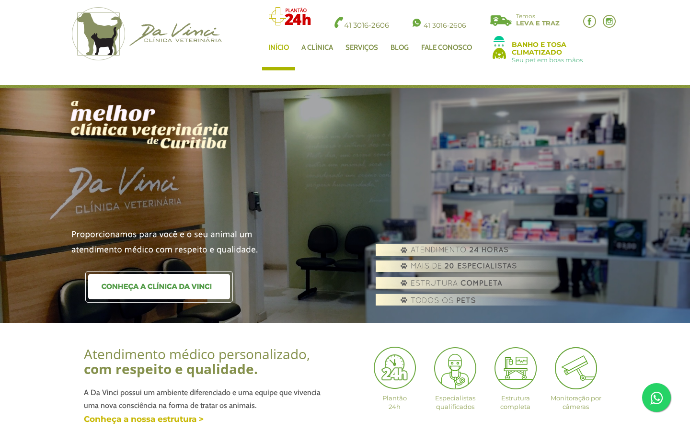
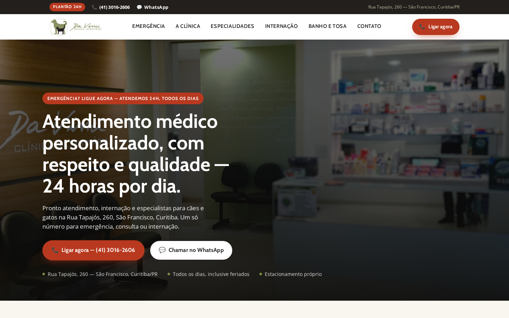
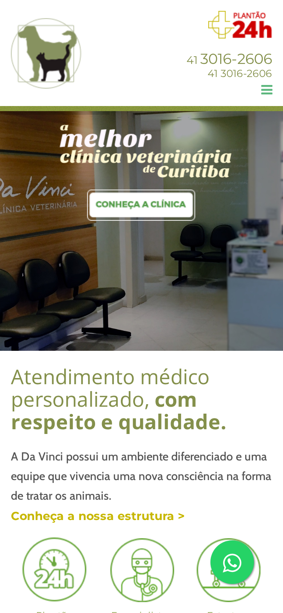
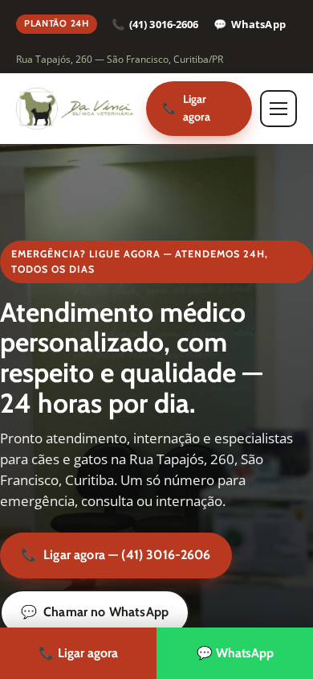

A clínica já vende plantão 24h, especialistas e internação — mas o site atual não conduz o tutor até "ligar agora" em nenhum momento crítico, e mostra dois números de contato diferentes no próprio cabeçalho. Este documento propõe uma reestruturação mobile-first focada em um único caminho de conversão: emergência primeiro.
Capturas reais do site oficial (14/07/2026) ao lado do conceito construído neste projeto, no mesmo viewport.




| # | Problema verificado | Melhoria proposta |
|---|---|---|
| 1 | A página inicial promove banho e tosa como destaque principal, apesar da clínica vender plantão 24h como diferencial central. | Hero mobile-first com chamada de emergência em primeiro plano, botão de ligação persistente (barra fixa no mobile) e triagem explícita por tipo de necessidade. |
| 2 | O próprio site mostra números diferentes para telefone e WhatsApp dependendo do breakpoint — risco real de o tutor perder tempo numa emergência. | Um único número de telefone/WhatsApp, com href correto (tel:/wa.me) repetido de forma consistente em barra superior, cabeçalho, seções e rodapé. |
| 3 | Não existe jornada separada para emergência, consulta, internação e banho e tosa — tudo cai num contato genérico, e uma área em branco com depoimento de baixo contraste interrompe a navegação. | Quatro cartões de triagem no topo da página, seção de internação dedicada, prova social recente com contraste corrigido, e nenhuma área vazia sem função. |
HTML/CSS/JS estático, mobile-first, com triagem por jornada, galeria da estrutura real e seção de especialidades/cirurgias.
Barra de ligação fixa no mobile, botões de WhatsApp e telefone consistentes em todas as seções, com o número validado nas fontes oficiais.
SOURCE_MANIFEST.md documentando cada fato, imagem e citação usada, incluindo a contradição de contato encontrada.
visible-md/visible-lg): tel:+4130162606 e wa.me/554130162606 — mesmo número. Header tablet (visible-sm): texto não-clicável "41 9663-0331" ao lado de "41 3016-2606". Rodapé e barra superior: tel:+554130162606 e wa.me/554130162606 — mesmo número. Ver SOURCE_MANIFEST.md §2 para o HTML de origem completo.assets/evidence/official-site-desktop-fullpage.png, entre a seção "Mais Serviços" e os teasers de blog — banda extensa com pouco conteúdo, seguida de depoimento em texto claro sobre fundo quase branco.BUILD_REPORT.md para os comandos e resultados de verificação em 1440×900 e 390×844 (overflow horizontal, erros de console, menu mobile, alvos de toque).